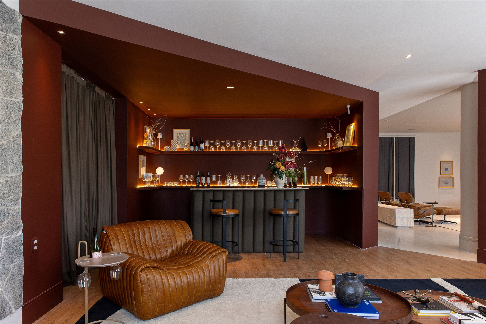
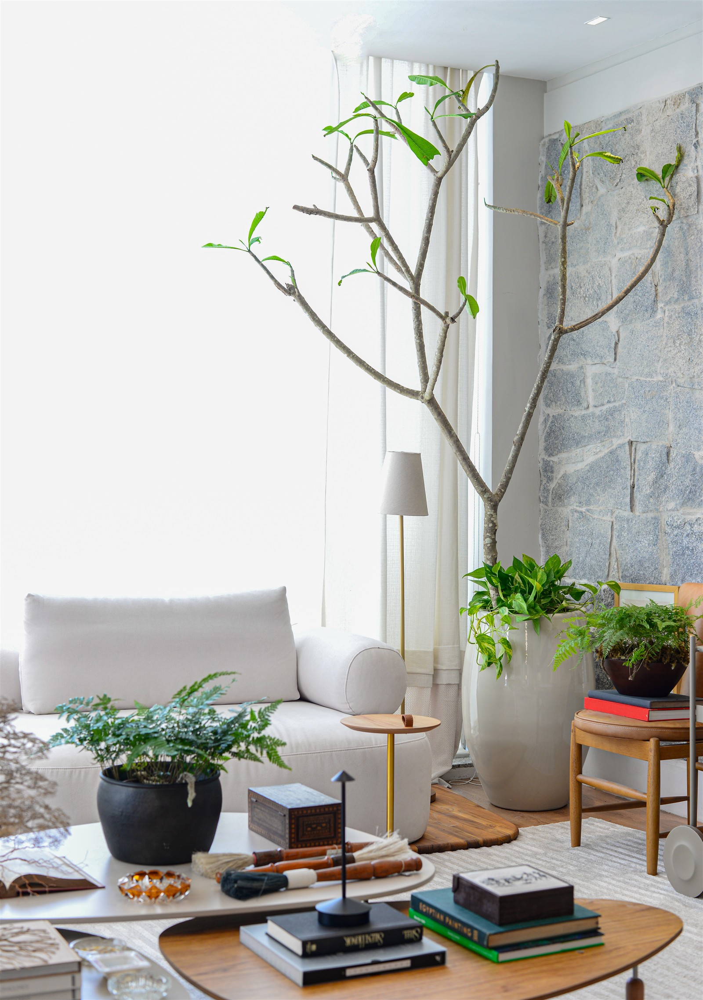
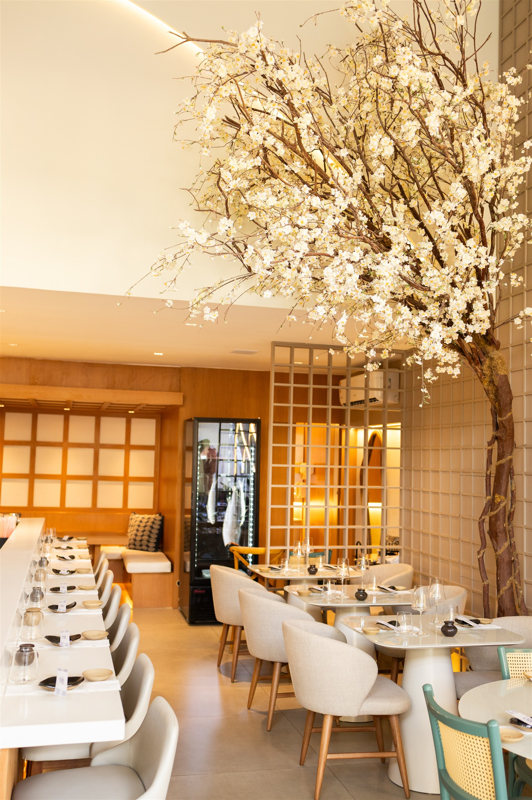
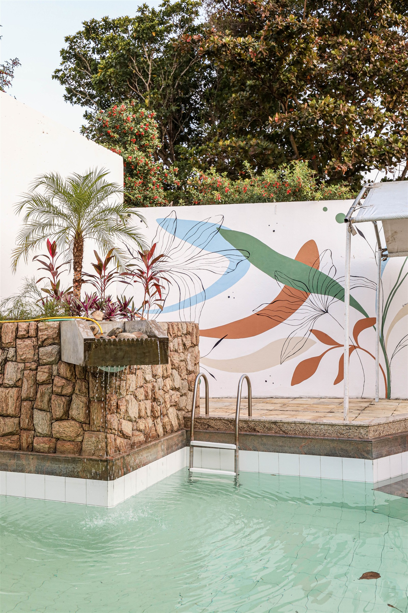
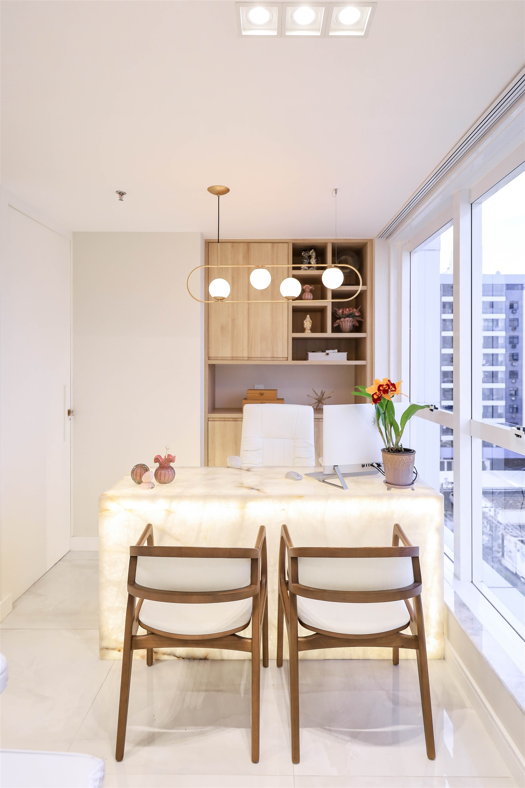

O mesmo espaço. Um novo olhar.
Do traço
à atmosfera.
Acompanhe a transformação ao rolar.
Estudo de contornos da fotografia · não é uma planta técnica
Conceito
Materialidade
Preparando os primeiros espaços…

Hyago Andrades · Arquitetura
O olhar por trás do espaço

Na luz que atravessa a sala. Na textura que convida ao toque. No encontro entre os materiais e as pessoas.
Projetar é dar sentido a essas relações. Criar espaços que acolhem o cotidiano e expressam quem os habita.



Uma seleção do nosso olhar
Da intimidade de uma casa
à identidade de uma marca.
Fotografias de projetos do acervo do escritório.
O mesmo espaço. Um novo olhar.
Acompanhe a transformação ao rolar.
Interiores comerciais · café
Acompanhe a transformação ao rolar.
Interiores residenciais · varanda
Acompanhe a transformação ao rolar.
Percorra outras perspectivas
Mais que espaços.
Possibilidades de viver.
Quem desenha os encontros
Por trás de cada espaço, há uma conversa. Sobre como você vive, o que importa e o que deseja construir.
É nesse encontro que o trabalho de Hyago Andrades começa: aproximando pessoas, ideias e possibilidades por meio da arquitetura.
Acompanhe o escritório no Instagram ↗Diferentes escalas. O mesmo cuidado.
Espaços para viver e criar novas histórias.
Materialidade, luz e proporção em diálogo.
A identidade da marca traduzida em espaço.
Toda transformação começa com uma conversa.
O seu próximoConte sua ideia ao escritório.
Vamos imaginar o que vem a seguir.